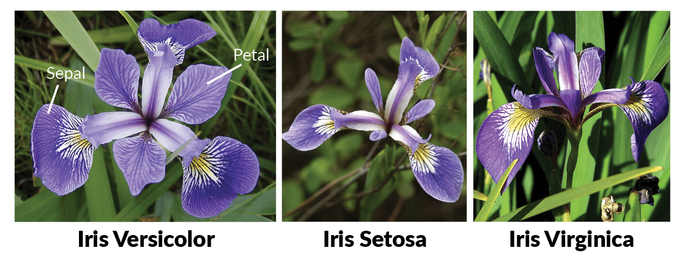
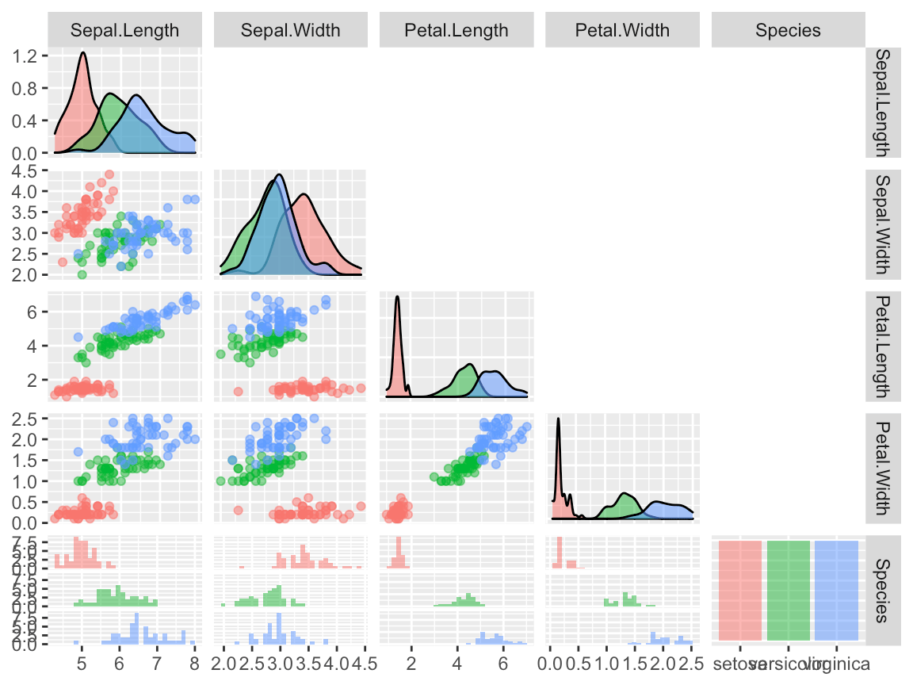
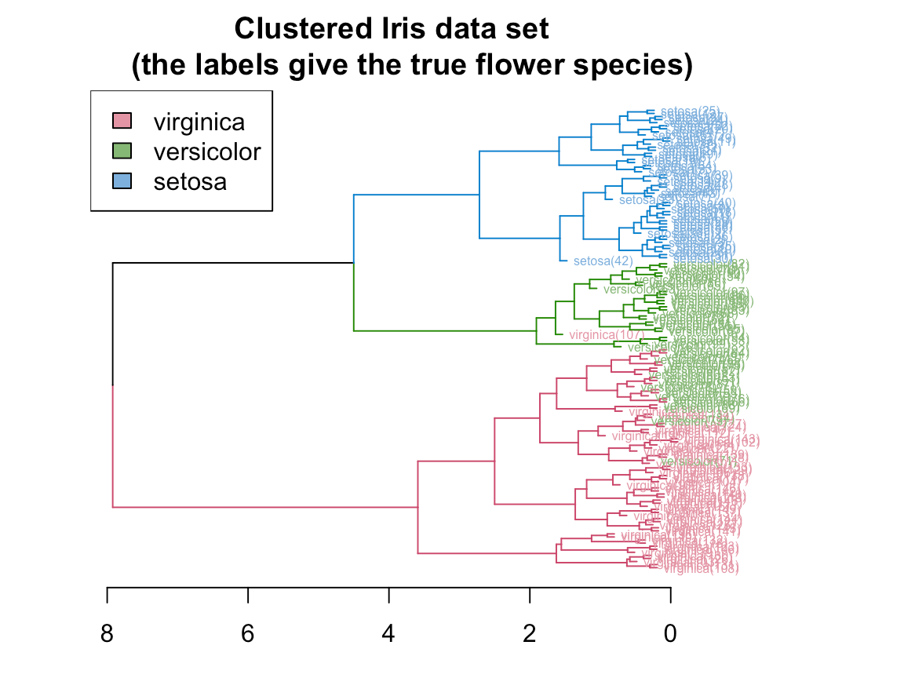
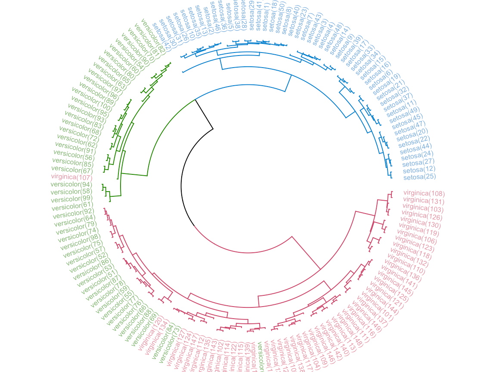

Chapter 5 机器学习
人工智能，机器学习和深度学习之间的关系：
人工智能-机器学习-深度学习(https://blogs.nvidia.com/blog/2016/07/29/whats-difference-artificial-intelligence-machine-learning-deep-learning-ai/)
rm(list=ls())
library(stats) # 统计学库
library(NbClust) # 聚类分析
library(factoextra) # 聚类
library(cluster)
library(class)
library(dendextend)
library(e1071) # SVM 支持向量机
library(rpart) ## recursive partitioning
library(rpart.plot)
library(colorspace) # 绘图色彩库
library(ggplot2) # 绘图库
library(ggraph) # 绘图库
library(GGally) # 绘图库5.1 可用数据集
Iris数据集是常用的分类实验数据集，由Fisher(1936)收集整理。Iris也称鸢尾花卉数据集，是一类多重变量分析的数据集。数据集包含150个数据样本，分为3类，每类50个数据，每个数据包含4个属性。可通过花萼长度(Sepal Length)，花萼宽度(Sepal Width)，花瓣长度(Petal Length)，花瓣宽度(Petal Width)4个属性预测鸢尾花卉属于（Setosa, Versicolour，Virginica）三个种类中的哪一类。四个特征变量的单位都是厘米(cm)。  m表示样本量的大小，n表示每个样本所具有的特征数。因此在该数据集中，m=150,n=4。
data(iris)
idx = as.numeric(iris$Species)
id = apply(cbind(1:3), 1, function(x) which(idx==x)[1:5])
knitr::kable(
iris[id, ], caption = 'Iris (Fisher 1936)数据表(部分)',
booktabs = TRUE
)| Sepal.Length | Sepal.Width | Petal.Length | Petal.Width | Species | |
|---|---|---|---|---|---|
| 1 | 5.1 | 3.5 | 1.4 | 0.2 | setosa |
| 2 | 4.9 | 3.0 | 1.4 | 0.2 | setosa |
| 3 | 4.7 | 3.2 | 1.3 | 0.2 | setosa |
| 4 | 4.6 | 3.1 | 1.5 | 0.2 | setosa |
| 5 | 5.0 | 3.6 | 1.4 | 0.2 | setosa |
| 51 | 7.0 | 3.2 | 4.7 | 1.4 | versicolor |
| 52 | 6.4 | 3.2 | 4.5 | 1.5 | versicolor |
| 53 | 6.9 | 3.1 | 4.9 | 1.5 | versicolor |
| 54 | 5.5 | 2.3 | 4.0 | 1.3 | versicolor |
| 55 | 6.5 | 2.8 | 4.6 | 1.5 | versicolor |
| 101 | 6.3 | 3.3 | 6.0 | 2.5 | virginica |
| 102 | 5.8 | 2.7 | 5.1 | 1.9 | virginica |
| 103 | 7.1 | 3.0 | 5.9 | 2.1 | virginica |
| 104 | 6.3 | 2.9 | 5.6 | 1.8 | virginica |
| 105 | 6.5 | 3.0 | 5.8 | 2.2 | virginica |
# ================================================================
# 原始数据
# ================================================================
data(iris)
x=iris
str(x)## 'data.frame': 150 obs. of 5 variables:
## $ Sepal.Length: num 5.1 4.9 4.7 4.6 5 5.4 4.6 5 4.4 4.9 ...
## $ Sepal.Width : num 3.5 3 3.2 3.1 3.6 3.9 3.4 3.4 2.9 3.1 ...
## $ Petal.Length: num 1.4 1.4 1.3 1.5 1.4 1.7 1.4 1.5 1.4 1.5 ...
## $ Petal.Width : num 0.2 0.2 0.2 0.2 0.2 0.4 0.3 0.2 0.2 0.1 ...
## $ Species : Factor w/ 3 levels "setosa","versicolor",..: 1 1 1 1 1 1 1 1 1 1 ...ggpairs(x, aes(colour = Species, alpha = 0.4), columns = 1:5, upper=NULL)
5.2 非监督分类
5.2.1 Principal component analysis (PCA)
在多元统计分析中，PCA是一种统计分析、简化数据集的方法。它利用正交变换来对一系列可能相关的变量的观测值进行线性变换，从而投影为一系列线性不相关变量的值，这些不相关变量称为主成分（Principal Components）。具体地，主成分可以看做一个线性方程，其包含一系列线性系数来指示投影方向。PCA对原始数据的正则化或预处理敏感（相对缩放）。
基本思想：
- 将坐标轴中心移到数据的中心，然后旋转坐标轴，使得数据在C1轴上的方差最大，即全部n个数据个体在该方向上的投影最为分散。意味着更多的信息被保留下来。C1成为第一主成分。
- C2第二主成分：找一个C2，使得C2与C1的协方差（相关系数）为0，以免与C1信息重叠，并且使数据在该方向的方差尽量最大。
- 以此类推，找到第三主成分，第四主成分……第p个主成分。p个随机变量可以有p个主成分[1]。
主成分分析经常用于减少数据集的维数，同时保留数据集当中对方差贡献最大的特征。这是通过保留低维主成分，忽略高维主成分做到的。这样低维成分往往能够保留住数据的最重要部分。但是，这也不是一定的，要视具体应用而定。由于主成分分析依赖所给数据，所以数据的准确性对分析结果影响很大。
PCA被广泛使用于以下方面： - 在特征中找到结构 - 其他机器学习算法的预处理 - 有助于可视化。
x.pca <- prcomp(iris[, -5])
summary(x.pca)## Importance of components:
## PC1 PC2 PC3 PC4
## Standard deviation 2.0563 0.49262 0.2797 0.15439
## Proportion of Variance 0.9246 0.05307 0.0171 0.00521
## Cumulative Proportion 0.9246 0.97769 0.9948 1.00000df= data.frame(x.pca$x, 'Species'=x$Species)
ggpairs(df, aes(colour = Species, alpha = 0.4), columns = 1:5, upper=NULL)(#fig:ch5.pca2)PCA下的iris数据
5.2.2 k-means聚类
K-mean算法的目标是把n个观测放到k个聚类（cluster）中间去，使得每一个观测都被放到离它最近的那个聚类中去，这里“最近”是用这个观测跟相对应的聚类的平均值（mean）的距离（distance）来衡量的。
# 方法1
data(iris)
x = iris
idx=as.numeric(x$Species)
species = levels(x$Species)
y = stats::kmeans(x[, 1:3], centers = 3, nstart = 10, iter.max=10)
z = table(y$cluster,species[idx])
knitr::kable(
z/50, caption = 'k-means分类精度',
booktabs = TRUE
)| setosa | versicolor | virginica |
|---|---|---|
| 0 | 0.1 | 0.74 |
| 1 | 0.0 | 0.00 |
| 0 | 0.9 | 0.26 |
# 方法2
library(factoextra)
data(iris)
x=iris[, 1:4]
pm= pam(x, k=3)
factoextra::fviz_cluster(list(data = x, cluster = pm$clustering),
frame.type = "norm", geom = "point", stand = FALSE)(#fig:ch5.km2)k-means聚类方法结果
# 不同k值的结果
ks <- 1:6
tot_within_ss <- sapply(ks, function(k) {
cl <- kmeans(x[, 1:4], k, nstart = 10)
cl$tot.withinss
})
graphics.off()
plot(ks, tot_within_ss, type = "b", ylab = "Total within squared distances", xlab = "Values of k tested")
grid()# --------------------
par(mfrow=c(2,3))
for(i in ks){
cl <- pam(x,i)
clusplot(cl, main=paste('K =', i), col.p=cl$clustering)
}(#fig:ch5.km4)不同k值分类结果
5.2.3 分层聚类(Hierarchical clsutering)
Hierarchical clustering有两种策略: Agglomerative和Divisive。
- Agglomerative 是一种 自下而上方法。开始假设每一个观测都是独立的聚类(cluster)，然后通过合并相邻的两个聚类 ，再多次迭代达到所有聚类的最高层级——所有观测都属于同一个聚类。
- Divisive 是一种自上而下方法。开始假设所有的观测都属于同一个聚类(cluster)，然后通过分离每个聚类中间比较不相似的观测成为下一层，直到所有的观测都属于不同的聚类(cluster)。一般来说，人们用Dendrogram来可视化分层聚类。
# ================================================================
# 分层聚类(Hierarchical clsutering)
# ================================================================
# Reference: https://cran.r-project.org/web/packages/dendextend/vignettes/Cluster_Analysis.html
library(dendextend)
d_iris <- dist(iris) # method="man" # is a bit better
hc_iris <- hclust(d_iris, method = "complete")
iris_species <- rev(levels(iris[,5]))
dend <- as.dendrogram(hc_iris)
# order it the closest we can to the order of the observations:
dend <- rotate(dend, 1:150)
# Color the branches based on the clusters:
dend <- color_branches(dend, k=3) #, groupLabels=iris_species)
# Manually match the labels, as much as possible, to the real classification of the flowers:
labels_colors(dend) <-
rainbow_hcl(3)[sort_levels_values(
as.numeric(iris[,5])[order.dendrogram(dend)]
)]
# We shall add the flower type to the labels:
labels(dend) <- paste(as.character(iris[,5])[order.dendrogram(dend)],
"(",labels(dend),")",
sep = "")
# We hang the dendrogram a bit:
dend <- hang.dendrogram(dend,hang_height=0.1)
# reduce the size of the labels:
# dend <- assign_values_to_leaves_nodePar(dend, 0.5, "lab.cex")
dend <- set(dend, "labels_cex", 0.5)
# And plot:
par(mar = c(3,3,3,7))
plot(dend,
main = "Clustered Iris data set
(the labels give the true flower species)",
horiz = TRUE, nodePar = list(cex = .007))
legend("topleft", legend = iris_species, fill = rainbow_hcl(3))
library(circlize)
par(mar = rep(0,4))
circlize_dendrogram(dend)
5.3 监督分类
5.3.1 KNN分类(k-nearest neighbour classification)
# ================================================================
# KNN - k-nearest neighbour classification
# ================================================================
set.seed(12L)
tr <- sample(150, 50)
ts <- sample(150, 50)
x=iris[, 1:4]
knn_model <- knn(train = x[tr, ],test = x[ts,], iris$Species[tr])
head(knn_model)## [1] versicolor setosa versicolor setosa setosa setosa
## Levels: setosa versicolor virginicares = table(knn_model, iris$Species[ts])
knitr::kable(
res, caption = 'kNN分类精度',
booktabs = TRUE
)| setosa | versicolor | virginica | |
|---|---|---|---|
| setosa | 20 | 0 | 0 |
| versicolor | 0 | 17 | 2 |
| virginica | 0 | 0 | 11 |
mean(knn_model == iris$Species[ts])## [1] 0.965.3.2 决策树(Decision trees)
# ================================================================
# 决策树(Decision trees)
# ================================================================
x=iris
dt_model <- rpart::rpart(Species ~ ., data = x,
method = "class")
graphics.off()
rpart.plot::rpart.plot(dt_model)# -----------------------
p <- predict(dt_model, x, type = "class")
res = table(p, x$Species)
knitr::kable(
res, caption = '分类精度',
booktabs = TRUE
)| setosa | versicolor | virginica | |
|---|---|---|---|
| setosa | 50 | 0 | 0 |
| versicolor | 0 | 49 | 5 |
| virginica | 0 | 1 | 45 |
5.3.3 支持向量机(SVM)
# ================================================================
# 支持向量机(SVM)
# ================================================================
# reference: https://rstudio-pubs-static.s3.amazonaws.com/515710_c0433490253f45c281f74b286c455419.html
data(iris)
svm_model <- svm(Species ~ ., data=iris,
kernel="radial") #linear/polynomial/sigmoid/radial
summary(svm_model)##
## Call:
## svm(formula = Species ~ ., data = iris, kernel = "radial")
##
##
## Parameters:
## SVM-Type: C-classification
## SVM-Kernel: radial
## cost: 1
##
## Number of Support Vectors: 51
##
## ( 8 22 21 )
##
##
## Number of Classes: 3
##
## Levels:
## setosa versicolor virginicagraphics.off()
plot(svm_model, data=iris, col=rainbow_hcl(3),
Petal.Width~Petal.Length,
slice = list(Sepal.Width=3, Sepal.Length=4) )#------------
pred = predict(svm_model,iris)
res = table(Predicted=pred, Actual = iris$Species)
knitr::kable(
res, caption = '分类精度',
booktabs = TRUE
)| setosa | versicolor | virginica | |
|---|---|---|---|
| setosa | 50 | 0 | 0 |
| versicolor | 0 | 48 | 2 |
| virginica | 0 | 2 | 48 |
1-sum(diag(res)/sum(res))## [1] 0.026666675.3.4 随机森林(Random Forest)
# ================================================================
# 随机森林(Random Forest)
# ================================================================
# Reference: https://lmavila.github.io/markdown_files/RF_Toy.html
library(randomForest)
set.seed(12L)
tr <- sample(150, 100)
ts <- sample(150, 50)
x=iris
rf_model <- randomForest(Species~.,data=x[tr,],ntree=100,proximity=TRUE)
print(rf_model)##
## Call:
## randomForest(formula = Species ~ ., data = x[tr, ], ntree = 100, proximity = TRUE)
## Type of random forest: classification
## Number of trees: 100
## No. of variables tried at each split: 2
##
## OOB estimate of error rate: 7%
## Confusion matrix:
## setosa versicolor virginica class.error
## setosa 32 0 0 0.0000000
## versicolor 0 29 3 0.0937500
## virginica 0 4 32 0.1111111res= table(predict(rf_model),x$Species[tr])
knitr::kable(
res, caption = '训练集分类精度',
booktabs = TRUE
)| setosa | versicolor | virginica | |
|---|---|---|---|
| setosa | 32 | 0 | 0 |
| versicolor | 0 | 29 | 4 |
| virginica | 0 | 3 | 32 |
x.pred<-predict(rf_model,newdata=x[ts,])
res = table(x.pred, x$Species[ts])
knitr::kable(
res, caption = '测试集分类精度',
booktabs = TRUE
)| setosa | versicolor | virginica | |
|---|---|---|---|
| setosa | 19 | 0 | 0 |
| versicolor | 0 | 13 | 0 |
| virginica | 0 | 0 | 18 |
5.4 深度学习(Deep Learning)

机器学习与深度学习的区别(https://www.inteliment.com/blog/our-thinking/lets-understand-the-difference-between-machine-learning-vs-deep-learning/)
且听下回分解~